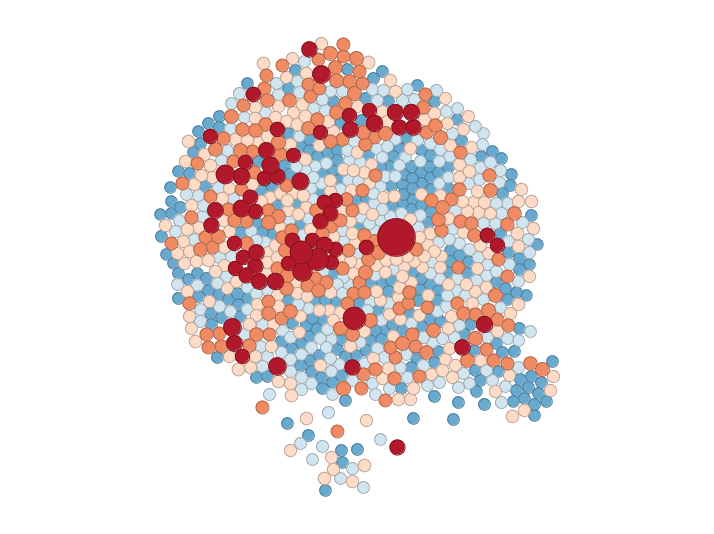

Spatial Data, Analysis, and Regression - II
A mini-course
Dani Arribas-Bel
W as a formal representation of space
- N x N positive matrix that contains spatial relations between all the observations in the sample
- Optional standardization
- Row-wise
- Matrix-wise
- ...
- Defined ex-ante (sometimes criticized by its ad-hoc nature)
- Very often, xij may follows standard criteria:
- Contiguity (queen, rook, bishop)
- Some function of distance
- Nearest neighbors (knn)
- ...
- In some contexts, additional requirements:
- Exogeneity
- Close match to theoretical framework
- Empirically motivated reflection of actual interactions
W graphically
Example: rook contiguity
↓
- Diagonal of zeros by assumption
- Gets large quickly
- Fairly sparse
→ GeoDaSpace demo with weights
The spatial lag
ysl − i = ∑ jwijyj
Ysl = WY
- Measure that captures the behaviour of a variable in the neighborhood of a given observation i.
- Similar to the time lag, but not completely (I am my neighbor's neighbor)
- Typically standardized to reflect some sort of average, although not always, depends on purpose (e.g. market potential).
- Common way to introduce space formally in a statistical framework
Heavily used in both ESDA and spatial regression to delineate neighborhoods. Examples:
- Moran's I
- LISAs
- Spatial models (lag, error...)
Exploratory Spatial Data Analysis
- [Exploratory] Focus on discovery and assumption-free investigation
- [Spatial] Analysis of patterns related to the spatial distribution of observations
Mapping
- Visual inspection of spatial distributions
Global measures
- Study of clustering of values (e.g. Moran's I)
Local measures
- Study of clusters of values (e.g. LISA statistics)
Space-Time dynamics (ESTDA)
- Study of change in spatial patterns
Mapping
Choropleths
- Thematic map in which values of a variable are encoded using a color gradient of some sort
- Preliminar and very exploratory but super useful as a check
- Many ways to classify (caution with that!)
- Unique values (categorical)
- Equal interval
- Quantiles (equal count)
- Fisher-Jenks
- ...
Choropleths
Cartograms
- Thematic map in which values of a variable are displayed by distorting the shape of their locations
- Useful, for instance, when observations greatly differ in the geographic size but want to visualize a different variable (e.g. employment)
- Many approaches and algorithms, from transforming polygons into circles to very intricate polygon deformations
Cartograms

Global measures
Scatter plot
- Visual device to explore spatial autocorrelation
- Simple scatter cloud of:
- [X axis] Variable of interest (
y) - [Y axis] Spatial lag of
y
- [X axis] Variable of interest (
[Demo with notebook]
Moran's I (1948)
- Slope of the scatter plot
- Summary of the overall spatial distribution
with $Z_i = X_i-\bar X$
Note: first part goes away with row-standardized W and, in matrix notation:
Similar measure: Geary's C, Getis & Ord
Local measures
Local Moran's I (1996)
This makes Ii nicely additive into I:
Similar measures: Local Geary's C, Local Getis & Ord
Local Moran's I
- Statistic to detect pockets of spatial instability
- It does not summarize but extends the amount of insight from the data
- Since it produces large outputs, it is usually visualized through maps:
- Clusters
- Significance

Spatial Data, Analysis and Regression - A mini course by Dani Arribas-Bel is licensed under a Creative Commons Attribution-NonCommercial-ShareAlike 4.0 International License.